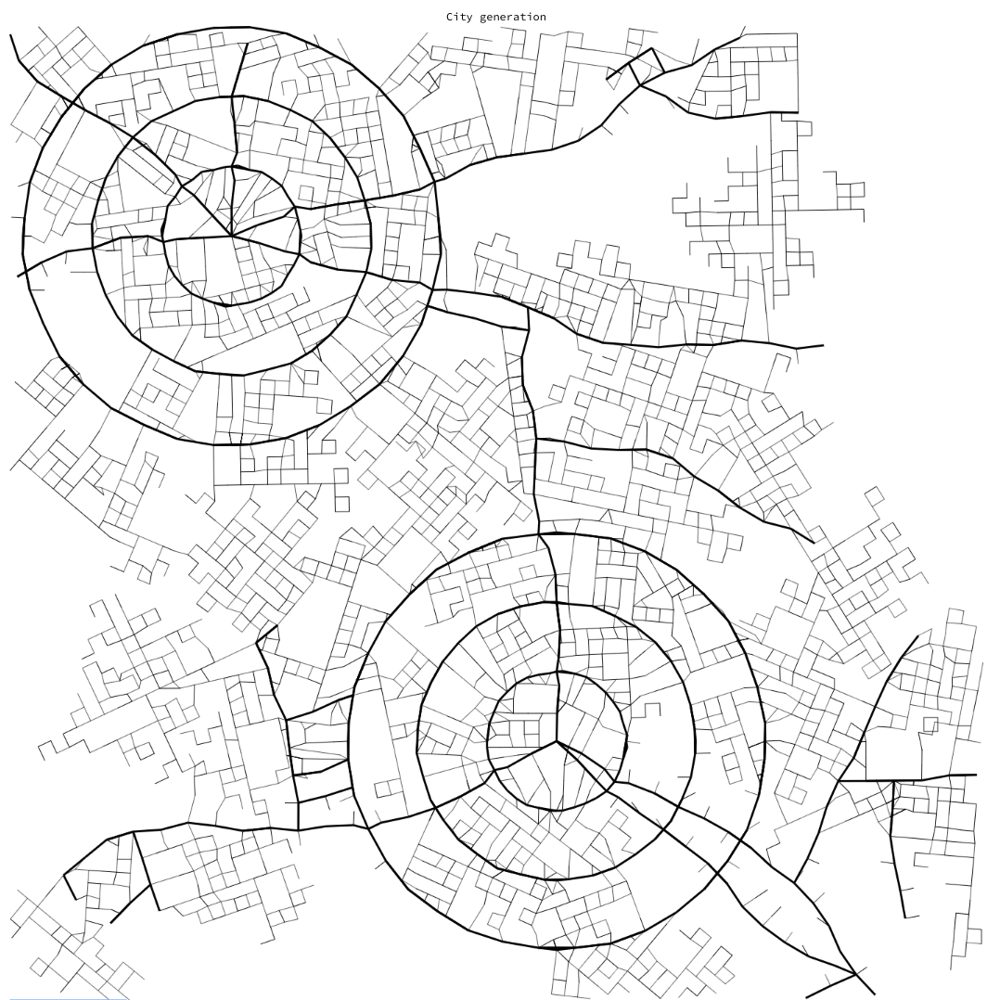

Project Log
Table of Contents
Introduction
This page will consist of the collaborative log from each group member and eventual problems and challenges that the group encounters during the development process of the project.
Usually, the group will write their own individual efforts at the end of the week and then compose it into one shared log which will be written here.
Week 11
This section has not been rewritten yet!
Jacob added a skyscraper generator, 5 pages were written on the Theory chapter (Noise, L-systems, Search-based PCG and Voronoi Diagrams). Marcus has finished the terrain options: terrain offset and sea level sliders. Using the sliders, sea level can be adjusted and the user can move along the terrain by entering a speed given to the sliders. Alexander worked with improving generation in the UI, like separating the road and street generation and also implemented block and plot types so that different things can be generated like parks or skyscrapers. Anton has also been making improvements on the generated road network mesh. This includes resolving bugs for specific intersections cases that caused the intersections and roads to stretch and occupy the whole world. Furthermore, the same problem was solved for a bug where duplicate identical roads were being instantiated. The roads also try to project onto the terrain. The projection on to the terrain is still a work in progress as some segements of the roads appear underneath the terrain which needs to be resolved next week. Work has been started with creating what will be the final structure of BuildingGenerator. The ability of generating any type of building with different kinds of strategy. Viktor has made sure to get his paths and parks working with the terrain. He also added a collision-check for the paths and worked on different algorithms for the paths.“ a
Week 10
This section has not been rewritten yet!
In this week, Marcus has worked on the UI for the terrain generator, adding sea level, x offset and z offset as modifiable options. A lot of PRs were reviewed/merged such as Mesh Terrain, Noise module, plots and buildings. We aso started on the final report and wrote about noise in the Theory chapter. Viktor spent this week adding the Park Generator to the World Generator and doing a little bit of report writing. We started doing daily meetings online. Alexander worked on the road generation so that it now adjusts based on terrain slopes and sea level in such a way that it doesn’t enter seas or tries to ascend to steep hills. This week Anton spent on reworking the generated road meshes (simplifying by removing crosssection, only road width and sidewalk now) and tweaking the intersections to a way that more similarily resembled CityEngine’s intersections(WIP).
Week 9
This section has not been rewritten yet!
<Exam week>
Week 8
This section has not been rewritten yet!
This week Anton worked on creating intersections between roads. At the moment the outline of the intersection looks reasonable - however, no actual complete mesh is generated except for the arc “”corners“” between two roads entering the intersection. Alexander has worked on a general noise generator component that can be used in many parts of the application, and also implemented the noise in the road generation to create highways outside cities that are guided towards high populated areas. Jacob worked on FBX -> glTF for terrain since FBX didn’t work without depending on UnityEditor. Since Unity’s terrain is dynamic it doesn’t work well in exporting as model, you can convert it to a mesh but that also requires UnityEditor. Thus, Jacob worked a lot on converting this terrain into a mesh-based one, integrating it with noise module, and supporting multiple textures and such. Marcus has been working slightly on camera movement so that the user can look around the city.
Week 7
This section has not been rewritten yet!
In this week Anton and Viktor held the halftime presentation. Viktor spent most of the rest of the week after that working on the PathGenerator for the parks, he was also assisted by Anton. Anton worked on coupling the generated road network with the spline and road mesh logic(Heavily Assisted by Alexander). Furthermore, he also has spent some time on generating a more complex shape for the road mesh (WIP). Jacob wrote on the polygon extractor part of the block generator. Alex and Jacob merged road generation functionalilty and block gen inset stuff. Alex implemented the block gen inset stuff. Jacob got a .GLTF and .GLB exporter to work in runtime. There seems to be some limis to the new exporter, but it works better than the last one. Marcus worked on adding water feature to the terrain and tweak the textures.
Week 6
This section has not been rewritten yet!
In this week everyone kept working on the generators from last week and improving them. Viktor and Anton also spent time on preparing the half-time presentation. The progress in output from the generators will be provided as images, and more detailed descriptions of how the work progress looked like will be given in the individual week-logs. Although a very rough draft of it the road generation logic from Anton and Alexander has started to be merged together. The park generator is currently in hiatus as Viktor and Theodor work together on implementing a polygon divider. We have working CI builds and linters now. We have proper terrain, population, road, park, building (only 1 building type though). We lack plot and block generator. We also lack a parking generator, but that wasn’t included in the scope of this iteration. Next week we will start a new iteration. The current FBX exporter only works in editor runtime which is a major concern.
Week 5
This section is work in progress!
“In this week we started programming the different generators. Theodor worked with the BuildingGenerator and the PlotGenerator, Viktor worked with the ParkGenerator, Anton and Alexander with the RoadGenerator, Marcus with the TerrainGenerator. Jacob has worked with FBX export to work in runtime, and had to try a lot of options to get something to work. One of major problems has been to make the FbxExporter in Unity to not depend on Editor code. Jacob also made a basic UI that resembles the mock. Anton worked on generating a road mesh following a (poly)bezier spline for the Road Generation.”
Week 4
This section is work in progress!
Since the deadline for the project plan was coming up, this week was dedicated to writing the content of the plan. Most of the time went to this, but there were development in the prototypes and method ideas that we brought up from past weeks.
In general, most sections of the report was rewritten by members that were not originally assigned to the section, in order to increase consistency. Everyone in the group made an effort to make sure that each of the chapters were well-written and together made up one coherent text.
Decisions
- We decided to not pursue the Wave Function Collapse type of procedural generation for roads.
Meeting, writing and assignments
Another meeting with Staffan resulted in very constructive feedback regarding our current project plan up to this week.
Red means bad, this should be removed
We decided we wanted to find some tools for spell-checking and grammar-checking, so we tried a few different tools. Grammarly turned out to be the most useful one because it helped us phrase our sentences more consistently and more “scientific”, basically giving our report more credibility.
Orange is more of a question, should this be changed?
Another tool we investigated is textidote, which is a tool for LaTeX for spelling, grammar and general LaTeX syntax checking. We mostly used this for the syntax, since grammarly did a much better job at spelling and grammar.
Blue is good, might be pretty useless
By this time, most of us had finished and passed the Chalmers Library Education Online assignment which consisted of a variety of writing technique questions, such as how to reference sources properly, evaluating source credibility and more.
Discussion and decisions
This week we discussed more methods and algorithms that are commonly used in procedurally generated content. Wave Function Collapse came up as a possible algorithm instead of the current road generation algorithm, but we decided to not pursue it given that the Agent-based generator would give suitable results.
Some of the eventual problems that could pose an issue for our project if we were to use Wave Function Collapse is that our city is not really two-dimensional, but that could be avoided. The biggest issue is that from what we found during our research of Wave Function Collapse is that it often results in rectangular results, but we did not want that type of consistency in our city which is why we decided to stick with our current Agent-based method.
We also talked about machine learning and Search-based AI, but we realized that there is not really a clear definition of how “good” a road is, and that is needed for the AI to be taught. One could potentially input real world data which would teach the AI to generate similar cities, however, none of us were very experienced in the machine learning field and thus we decided to skip this.
Week 3
Decisions
- The Agent-based method for road generation is the one we are going to use.
- A summary of the current week progress should be written during every Friday’s workshop at 16:00.
- Alexander is responsible for the communication between the other project group that has the same project as our group.
- Anton is responsible for the communication between our group and the supervisor which means he is responsible for sending and responding to mail with the supervisor.
- We decided we do not need any strict rules for taking breaks during workshops, in regards to if that pause should be logged (acceptable within reasonable durations).
- Unity and C# will be used for the project
- We limit ourself to only generating modern cities.
- Some LaTeX writing style preferences were decided upon for consistency within the group.
Tools
Unity and C# are by far the easiest tools to use for our project, and it suits our needs completely. Some of us are already familiar with Unity and C#. Everything that the project needs (and more) is offered within Unity, as well as very powerful debugging and profiling tools. Lots of features that we want to implement can easily be done with Unity compared to other tools available.
Some alternatives that were researched up to this week is C++ Raylib, Java LWGJL, Java jMonkeyEngine, but these were ruled out mostly because it lacked most of the tools that we would need which Unity already had. Choosing one of those alternatives would mean we would have to reimplement a lot of basic functionality that would only postpone actual development of the project.
Report, Project plan and Terminology
For the most part, this week was spent writing the project plan and the first draft was quickly completed in order to get feedback from the supervisor.
Something that we quickly realized would be important for writing the project plan and report was terminology. Even within our group, we realized there were inconsistency in the meaning of words and that meant that we had to define these very strictly in the report in order to avoid confusion for the reader. We spent a while defining these and they can be found in the project plan / report.
Development
The first method of road generation turned out to be best suited for our project, but the second method will be considered for plot generation in the future. A lot of progress was made on making the road generation as flexible as possible, as well as tuning the results for better results.
The road generator now lets each agent to have its own strategy for generation which they will follow. One example of a road strategy that is used is the Paris or Manhattan strategy, which basically means the agents will walk around and place roads that mimic the structure of these cities.

Figure 1: Road generation prototype using method 1

Figure 2: Road generation with population map (dark is high density in this picture)
For the world generator, we defined a pipeline that the program will follow which basically means that we have created a design for the algorithm as a whole.
Overall
It was useful to get a lot of work done this early and we quickly got a perspective of how the city generation would work. Lots of great feedback from our supervisor resulted in a better writing technique and better results from the algorithm.
Week 2
This week also had a few lectures, and Alexander also came back from his vacation so we made sure to get him up to date.
Decisions
- Theodor is responsible for the meeting agenda but does not have to be secretary ever.
- Jacob is responsible for the administrative decisions documents but does not have to be secretary ever.
- Anton is responsible for booking group rooms for workshops every week.
- If a group member is late for a meeting, that group member cannot log the time that was missed.
Discussion and planning
Lots of subjects were brought up during the workshops this week, such as what method we wanted to use for different parts in the world generator. We quickly came up with two methods of generating roads, and because we could not all agree on one method we decided it was best to create two separate demos that would demonstrate the method and its pros / cons.
The first demo would make use of road building Agents that would be deployed onto a 2D-plane, and they would place down roads while interacting with the road network. This would initially be a very basic system that would simply have Agents walk in straight lines and sometimes branch off into more Agents.
The second demo would use a recursive approach where it splits the world into small cells, and each cell would further be subdivided. The idea was to place down a lot of points, split the cell into two by creating a line between each point, and then recursively applying that algorithm into more detail.
We decided to postpone selecting which tools to use for our project until next week, because we wanted to research which tool would suit us best and needed more ticouldme.
Week 1
This week marks the start of the project, and thus a lot of research and administrative tasks had to be done, such as decisions regarding tools and a schedule.
Every decision that we make during meetings should be documented, so we decided to create a group contract and a log book. Initially, the log book were only the individual’s own weekly logs, but we later realized we needed a shared log that summarized the overall progress of the project, which is the log that you are reading right now.
Decisions
- The secretary during the meetings should be rotated according to this order:
- Marcus Ansamaa
- Alexander Arvidsson
- Anton Håkansson
- Viktor Truvé
- The report should be written in LaTeX and it should be written in swedish (this decision was later changed to english in a future decision).
- Theodor is responsible for booking group rooms for meetings.
We decided to use Google Calendar for scheduled meetings, and that we should have two lunch meetings as well as 3 workshops every week. The lunch meetings usually were an hour long, over lunch, while the workshops were all 4 hours, placed during Thursday afternoon, Friday morning and Friday afternoon. The purpose of the workshops is to meet up with the group to sit down and get work done, while also being able to get help from eachother if need be.
For communication, we decided to use Slack as it is the easier platform which everyone was familiar with, which also gave us a more organized form of communication than other platforms would offer (for example, Messenger).
File sharing and development ended up being Google Drive and Github. All our documents and resources we collect during the projects lifetime would be placed in drive for ease of access, while the project code and report is in two separate Github repositories for version control.
Meetings and research.
We got to meet our supervisor, Staffan, during this week which guided us to get a good start with the project, and we were also able to ask any questions we had before getting started.
Most of us who were available also attended the introductory seminars during this week.
The rest of the time was spent invididually, researching different aspects of the project to get a deeper understanding of what requirements and specifications our project would need.